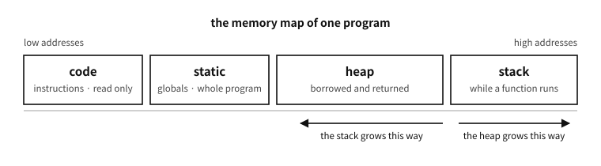

2 The regions of memory — where a program puts what
What to know first
Looking back
Chapter 1 said programming is “writing a list of simple instructions”. Then where are those instructions, and the values the instructions handle, during execution?
A. Both are in memory — but they are not mixed together in the same place. A program’s memory is divided into regions of different character, and each region has different rules. Some regions stay as they are until the program ends, some live only while one function runs, and some the programmer borrows and gives back personally. Draw this rough sketch first and all the later stories find their places.
The need for this chapter, and its context
malloc, stack overflow — becomes a term to be memorized without knowing where the thing sits. Fix the names and characters of the regions first and those words arrive already having a place. That is why a chapter with not one line of C syntax sits in part 1.By the end of this chapter
The questions this chapter answers
- Why divide it at all? Is memory not just one lump?
- Then where does the rule “an uninitialised value is 0” come from?
- Then is the sketch this chapter taught untrustworthy?

Figure 2.1 — The memory layout of one program. Nearly every later chapter is read on top of this picture.
2.1 Four regions, one metaphor
Think of a person working at a desk and the picture comes together.
| region | metaphor | what is placed there | how long it lives |
|---|---|---|---|
| code | the work order | the program’s instructions | the whole program (usually unmendable) |
| the static region | built-in shelves | values the whole program shares | the whole program |
| the stack | the workbench | temporary values needed by the work at hand | until that work ends |
| the heap | the warehouse | values whose size and lifetime you settle yourself | until it is given back |
Table 2.1
Code is only read. Rewriting the work order during execution is usually forbidden.
The static region takes its place when the program starts and stays as it is until it ends. That it is visible anywhere and always alive is both its strength and its danger — convenient, but a value that can change anywhere is hard to follow.
The stack is the workbench. Begin one task and you spread out on the bench what that task needs, and when the task ends you clear it away whole. It is fast and automatic but narrow — and once cleared away, the things in that place cannot be found again.
The heap is the warehouse. Ask “lend me this much” and it gives you room, and when you have finished you must give it back. The size can be settled during execution and it can be kept alive as long as you wish; in exchange the responsibility of returning what was borrowed lies with the person.
Q. Why divide it at all? Is memory not just one lump?
A. Physically it is — the one corridor of lockers we shall see in chapter 5. The dividing is an agreement, and that agreement gives two things.
First, automatic management. Gather the temporary values one function uses in one region (the stack) and they can all be cleared away when that function ends. There is no need to look after them one by one.
Second, protection. Make the code region read-only and the program can be prevented from rewriting its own instructions by mistake (or an attacker from doing so on purpose). Giving different permissions per region is the basic defence of modern operating systems.
2.2 Why the static region divides in two — the strange name bss
In practice the static region divides again in two. The name is unfamiliar but the story is simple.
- Things with an initial value — for example something settled as “this value is 7 at first”. That 7 must really be inside the executable file.
- Things whose initial value is 0 — if the first value is 0, there is no reason to write a heap of zeros into the file. Only one number saying “fill this much with zeros” is written down, and the actual filling is done when the program starts.
The second region’s name is bss. It came from the abbreviation of a 1950s assembler instruction; the meaning has been forgotten but the name has crossed half a century. Thanks to this distinction, the executable of a program that “starts a table of a million slots all at zero” does not grow large.
Q. Then where does the rule “an uninitialised value is 0” come from?
A. It holds for the static region only — and that 0 is not free but something somebody filled in. The operating system gives a place already filled with zeros, or on a machine with no operating system the program’s startup code turns a loop itself and fills it with zeros.
Conversely, a temporary value on the workbench (the stack) is not 0. It inherits as it stands the place some other work just used and left, so what remains there cannot be known. This difference is one of the places people learning C stumble at most often, and chapter 44 treats it formally.
2.3 The characters of the three regions contrasted
A table we shall keep using. For now it is enough to get the feel.
| static | stack | heap | |
|---|---|---|---|
| when the size is settled | at translation | at translation (usually) | during execution |
| lifetime | the whole program | until that work ends | until it is given back |
| tidying up | automatic | automatic | by the person |
| speed | fast | fastest | relatively slow |
| room to spare | fixed | narrow (usually a few MiB) | wide |
| common accidents | changed anywhere | overflow, referring to a dead place | leaks, giving back twice |
Table 2.2
The last row of this table takes up a good deal of the latter part of this book. C’s reputation as powerful and dangerous comes mostly from what happens when the rules of these three regions are broken.
In practice. A sense of how narrow the workbench is
Even on today’s computers, whose warehouse (the heap) is tens of gigabytes, the workbench (the stack) is narrow. Common defaults are 8 MiB on Linux and 1 MiB on Windows — a few thousandths of the whole memory.
So a beginner’s first collapse mostly happens here. Try to spread a big table whole on the workbench, or write a program that calls itself endlessly, and the workbench overflows and the program dies on the spot — the name is exactly that, stack overflow (the name of the world’s most famous programming question site came from here). The detailed numbers and remedies are treated in chapters 44 and 83.
A common misconception. “Using a lot of memory makes a program slow”
Half right. The problem is not the amount but which region is used and how. Values used briefly on the workbench and cleared away are nearly free however many there are, while repeatedly borrowing from and returning to the warehouse is noticeably slow even with small amounts (we measure it in chapter 45). And for a reason we shall see in chapter 11, the same amount scattered or gathered makes a difference of several times. A sense for handling memory grows not from “how much” but from “where, and in what order”.2.4 How far this sketch holds
The four regions drawn so far really do look like that on the machines in wide use today. The desktops and servers running Linux, Windows and macOS, and the overwhelming majority of programs on them, have this shape. So carry the sketch with you.
One thing must be known alongside it, though. ★ This is not the shape the C language demands.
2.4.1 The standard has no word “stack”
Read the C23 standard document from beginning to end and the word stack never appears once. Nor does heap.1 This is no surprise. The standard does not fix machinery; it fixes properties that must hold.
| What this chapter said | What the standard actually says |
|---|---|
| it is taken on the stack | automatic storage duration — created on entering a block, gone on leaving it |
| it lives in the static region | static storage duration — it lives as long as the program |
| it is borrowed from the heap | allocated storage duration — what the malloc family gives |
| stack frames pile up | recursive calls are permitted |
Table 2.3
The last row matters most. Instead of demanding a stack, the standard writes this.
“ Recursive function calls shall be permitted, both directly and indirectly through any chain of other functions.2 ”
★ The difference is decisive. Not “provide a stack” but “make recursion work.” A stack is merely the most common way to satisfy that demand, not the only one. The standard leaves the method to the implementation and demands only the result — the idea of the abstract machine from chapters 13 and 14 is at work here too.
2.4.2 Machines that really are different — today
Not “could differ in theory”: things being sold right now. The 8-bit PIC microcontroller is a good example.
In practice. A machine with a stack you cannot use
Microchip’s 8-bit PIC family has a hardware stack. Its character is quite unlike the workbench we drew.
- Its depth is fixed. Eight levels on the mid-range core, sixteen on the enhanced mid-range. Nest calls deeper than that and it overflows — it cannot be enlarged.
- ★ You cannot put values on it. All that stack holds is return addresses, and the program has no means to push onto it or read from it. It is a different thing entirely from data memory.
So where do local variables go? The compiler analyses the call graph in advance and assigns places. Microchip’s XC8 compiler calls this the compiled stack, and its manual states that it “is statically allocated”, and that for devices which do not support the reentrant model, “all functions are encoded to use the compiled stack, which are non-reentrant functions.”3
★ Here it collides head-on with the standard clause above. A non-reentrant function cannot call itself. The standard said recursion shall be permitted, and in this arrangement it does not come free. So a compiler for such an environment either builds a separate software stack when recursion is needed (slow, and it eats RAM) or tells the programmer not to recurse. The same manual notes the reason: since the number of iterations of a recursive call cannot be predicted, “the number of hardware stack levels and the total software stack size cannot be determined, so no stack guidance is possible.”
This is the reality of the freestanding environment of chapter 94 — what happens when the hardware does not hand over for free what the standard demands.
Look at history and such machines were the common case.
| Machine or era | What was different |
|---|---|
| early mainframes (1950s–60s) | the very idea of a call stack was not standard. A fixed slot holding the return address per function was common — and that makes recursion impossible in principle |
| early Fortran and COBOL | local variables were allocated statically, so recursion was not supported |
| Burroughs B5000 (1961) | the opposite extreme — the stack was in the hardware, and the instruction set itself was a stack machine |
| Harvard architecture | code and data live in different memories altogether. “One address space divided into four” does not hold |
| today’s 8-bit MCUs | exactly as in the box above |
Table 2.4
Q. Then is the sketch this chapter taught untrustworthy?
A. No. Separate two things.
① “What it looks like” is usually right. In the environments this book addresses — desktops, servers, phones, and most embedded systems that have an operating system — the four-region picture is a fact. Open a debugger and it really looks like that.
② “Must it be so” is a different question. Which is why you must not write code that leans on this sketch. Assuming the stack grows downwards, assuming local variables are neighbours in memory, comparing the addresses of two locals to judge their order — none of that is guaranteed by the standard, and machines really do differ (chapter 37). The layout widened to embedded systems is in chapter 83.
★ In short: use the sketch to understand, and write code against the contract. That distinction runs through the whole book. This chapter drew a picture for understanding; the table above marks how much of that picture is a promise.
2.5 Where this sketch will be used
For now it is enough to know the names. These four regions keep returning through the whole book.
| where | what |
|---|---|
| chapters 5 and 6 | addresses and alignment — the geography of the corridor the regions lie in |
| chapter 11 | the ladder of memory — even the same region differs in speed by cache |
| chapter 44 | lifetime and storage duration — what C’s grammar calls these regions |
| chapter 45 | dynamic memory — the discipline of borrowing from and returning to the warehouse |
| chapter 83 | the real layout in operating systems and embedded work |
| chapter 84 | inside the allocator that manages the warehouse |
Table 2.5
We have seen what a program puts where. The next chapter looks briefly at what the operating system does for that program when it runs — the difference between a program and a process, and how a process is born.
Notes
- Checked mechanically over the whole of N3220, the widely referenced working draft of ISO/IEC 9899:2024 (759 pages) —
stack0 occurrences,heap0. How to obtain the standard is in appendix D. ↩ - ISO/IEC 9899:2024 §6.5.3.4 (Function calls). ↩
- MPLAB XC8 C Compiler User’s Guide for PIC MCU (Microchip, DS50002737). ↩